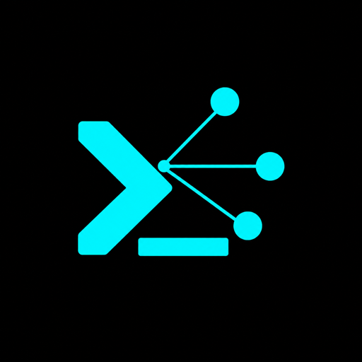

AskChing● LIVE · ETHEREUM MAINNET
01 / ASK
Ask the market in plain English.
› Where can I earn yield on USDC across lending, Uniswap V3, and Curve?
Keep lending and LP rankings separate. Show every formula and citation.
Keep lending and LP rankings separate. Show every formula and citation.
01intentcross-venue yield discovery
02selected tooldiscover_yields
03query fan-out6 live subgraph sources
04guardraillending APY ≠ historical LP fee APR